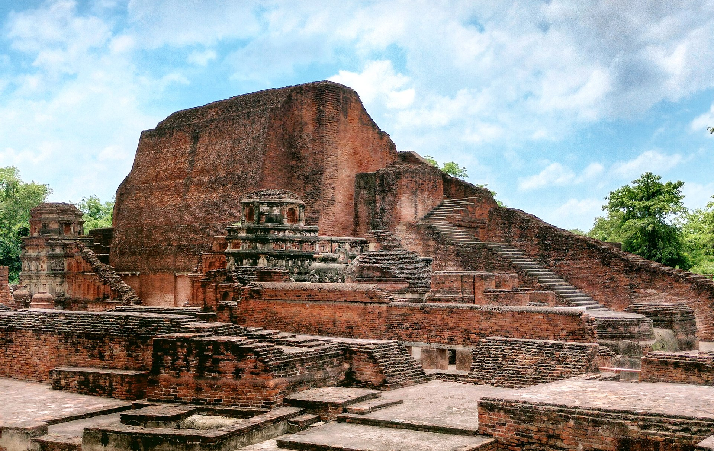

Bihar (Bihari languages: Bihār, pronounced [bɪˈɦaːr] ⓘ) also spelled Behar in colonial
documents, is a state in Eastern India. It is the second largest state by population, the 12th
largest by area, and the 14th largest by GDP in 2024. Bihar borders Uttar Pradesh to its west, Nepal
to the north, the northern part of West Bengal to the east, and Jharkhand to the south. Bihar is split by the
river Ganges, which flows from west to east. On 15 November 2000, a large chunk of southern Bihar was ceded
to form the new state of Jharkhand. Around 11.27% of Bihar's population live in urban areas as per a 2020
report.Additionally, almost 58% of Biharis are below the age of 25, giving Bihar the highest proportion of
young people of any Indian state. The official language is Hindi, which shares official status alongside
that of Urdu. The main native languages are Maithili, Magahi and Bhojpuri. But there are several other languages
being spoken at smaller levels.
